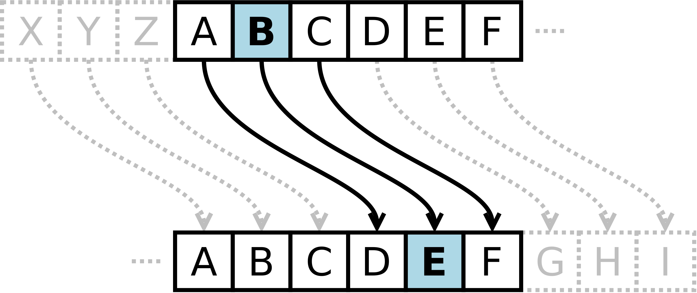

TP2 - Chiffrage et déchiffrage de messages.
Table des matières
Dans ce TP, nous allons nous mettre à chiffrer et déchiffrer des messages à partir d'algorithmes simples. Dans un premier temps nous allons considérer le chiffrage de César, dont nous allons aussi implémenter un déchiffrage sans connaître la clé. Selon le temps, nous allons considérer d'autres algorithmes de chiffrage.
Chiffrage de César
Le chiffrage dit de César est un chiffrage par substitution. Il consiste à décaler chaque lettre du message d'un certain nombre de positions dans l'alphabet. Par exemple, avec un décalage de 3, la lettre A devient D, la lettre B devient E, etc. Le déchiffrage consiste à décaler les lettres dans l'autre sens.

Mathématiquement, le chiffrage de César est une fonction de la forme : $$ f(x) = (x + k) \mod 26, $$ où \(k\) est la clé de chiffrage et \(x\) l'indice de la lettre à chiffrer dans l'alphabet.
Le déchiffrage est la fonction inverse : $$ f^{-1}(x) = (x - k) \mod 26. $$ où \(k\) est la clé de déchiffrage et \(x\) l'indice de la lettre à déchiffrer dans l'alphabet.
Environnement de travail
Pour ce TP, créer un dossier nommé info501_tp2_nom1_nom2 avec la structure suivante:
info501_tp2_nom1_nom2/
├─ src/
│ ├─ traitements_chaines.c
│ ├─ traitement_chaines.h
│ ├─ caesar.c
│ ├─ caesar.h
│ ├─ decrypt_caesar.c
│ ├─ decrypt_caesar.h
│ ├─ fichiers.c
│ ├─ fichiers.h
├─ tests/
├─ executables/
│ ├─ encrypt_caesar_stdin.c
│ ├─ decrypt_caesar_stdin.c
│ ├─ encrypt_caesar_file.c
│ ├─ decrypt_caesar_file.c
│ ├─ decrypt_caesar_bruteforce.c
├─ Makefile
Le fichier Makefile est un fichier spécial qui permet de définir des cibles à exécuter pour compiler le projet. Pour plus de détails, voir la documentation de GNU Make. Si l'on est sur Windows, il convient d'abord d'installer make en utilisant cette page.
Pour ce TP nous vous donnons les fichiers:
Pour l'utiliser dans le terminal, il suffit de taper la commande make cible, où cible est la cible à exécuter. Par exemple, pour compiler le fichier encrypt_caesar_stdin.c, il suffit de taper la commande make encrypt_caesar_stdin.
Dans ce TP nous allons prendre l'habitude de tester nos fonctions dans des fichiers séparés dans le dossier test. Une commande spécifique make compile_tests a été réalisée pour compiler tous les fichiers contenus dans le dossier tests.
Partie I - Traitement de chaînes de caractères
Avant de considérer le chiffrage de César, nous allons implémenter quelques fonctions de traitement de chaînes de caractères. Créer les fichiers traitements_chaines.c et traitements_chaines.h dans le dossier src.
- On veut pouvoir lire un texte en mémoire mais on ne connait pas à l'avance. Une solution consiste en allouant un tableau de caractères de taille fixe qui définira la limite de la taille du texte. Implémenter la fonction
read_textqui prend en paramètre la taille du tableau. La fonction doit lire un texte entré par l'utilisateur et le stocker dans un tableau alloué dynamiquement. La fonction doit retourner le nombre de caractères lus. On testera la fonction en créeant un fichier adéquat dans le dossiertests. Il est possible d'exécuter tous les tests en lançant la commandemake run_testsdans le terminal à la racine du projet. - On propose de remplacer la fonction par la fonction suivante qui lit une ligne de taille quelconque
Cette fonction prends en entrée un pointeur vers un fichier, ce qui est un type particulier de pointeur qui pointe sur le contenu d'un fichier. Il est possible de considérer l'entrée standard comme un fichier. On peut donc lire une ligne de texte entrée par l'utilisateur en utilisant cette fonction avec comme entrée#include <stdio.h> #include <stdlib.h> #include <string.h> char * getline_file(FILE * f) { size_t size = 0; size_t len = 0; size_t last = 0; char * buf = NULL; do { size += BUFSIZ; /* BUFSIZ is defined as "the optimal read size for this platform" */ buf = realloc(buf,size); /* realloc(NULL,n) is the same as malloc(n) */ /* Actually do the read. Note that fgets puts a terminal '\0' on the end of the string, so we make sure we overwrite this */ fgets(buf+last,size,f); len = strlen(buf); last = len - 1; } while (!feof(f) && buf[last]!='\n'); return buf; }stdin, qui est un pointeur vers l'entrée standard. Essayer cette fonction en faisant un nouveau test dans un fichier séparé de test que vote fonction précédente. - Faire une fonction qui teste si un caractère est une lettre de l'alphabet. On testera la fonction en créeant un fichier adéquat dans le dossier
tests. On pourra s'aider de la représentation ASCII des caractères. - On ne voudra traiter un texte que si celui-ci est en minuscules. Implémenter la fonction
to_lowerqui prend en paramètre une chaîne de caractères et la transforme en minuscules. On testera la fonction en créeant un fichier adéquat dans le dossiertests. On pourra essayer de trouver une relation entre les caractères minuscules et majuscules dans la table ASCII. - Faire enfin une fonction
is_spacequi teste si un caractère est un espace. On testera la fonction en créeant un fichier adéquat dans le dossiertests.
Partie II - Caesar sur entrée utilisateur
On veut maintenant implémenter le chiffrage de César sur une chaîne de caractères entrée par l'utilisateur. Créer les fichiers caesar.c et caesar.h dans le dossier src.
- Implémenter la fonction
encrypt_caesarqui prend en paramètre une chaîne de caractères et une clé de chiffrage. La fonction modifie la chaine en entrée et s'arrête si elle rencontre un caractère non supporté à part les espaces. On testera la fonction en créeant un fichier adéquat dans le dossiertests. - Implémenter la fonction
decrypt_caesarqui prend en paramètre une chaîne de caractères chiffrée et une clé de déchiffrage. La fonction doit retourner une chaîne de caractères déchiffrée. On testera la fonction en créeant un fichier adéquat dans le dossiertests. - Créer un fichier
encrypt_caesar_stdin.cdans le dossierexecutablesqui prend en entrée une chaîne de caractères et une clé de chiffrage et affiche la chaîne chiffrée. On testera le fichier en utilisant la commandemake encrypt_caesar_stdindans le terminal. - Créer un fichier
decrypt_caesar_stdin.cdans le dossierexecutablesqui prend en entrée une chaîne de caractères chiffrée et une clé de déchiffrage et affiche la chaîne déchiffrée. On testera le fichier en utilisant la commandemake decrypt_caesar_stdindans le terminal.
Partie III - Caesar sur fichiers
On veut dans cette partie traiter toutes les lignes d'un fichier plutôt que de taper à la main avec la sortie standard. Pour cela, nous allons lire en mémoire chaque ligne d'un fichier à l'aide des fonctions fopen et fgets de la librairie standard. En vous aidant de la documentation, réaliser les programmes encrypt_caesar_file.c et decrypt_caesar_file.c dans le dossier executables en supposant que le chemin du fichier ainsi que la clé de chiffrage est demandé à l'utilisateur. On ne supposera plus une taille quelconque pour les lignes mais on définira une taille maximum à priori.
Plutôt que de demander à l'utilisateur le chemin du fichier, on peut passer le chemin du fichier en argument du programme. Pour cela, on peut utiliser la variable argc qui contient le nombre d'arguments passés au programme et la variable argv qui contient les arguments passés au programme. Par exemple, pour passer le chemin du fichier, on peut lancer le programme de la manière suivante : ./encrypt_caesar_file fichier.txt 3. Le chemin du fichier sera alors stocké dans argv[1] et la clé de chiffrage dans argv[2]. Adapter alors les programmes pour qu'ils prennent en compte ces arguments.
Partie IV - Brute force sur Caesar
On veut maintenant implémenter un déchiffrage de César sans connaître la clé. Pour cela, on va tester toutes les clés possibles et on va choisir la clé qui donne le plus de mots valides. Créer les fichiers decrypt_caesar.c et decrypt_caesar.h dans le dossier src.
Pour tester si des mots sont valides, on donne le fichier suivant: francais.txt qui contient tous les mots français. Il suffirait en théorie de tester pour chaque clé, pour tous les mots s'ils existent dans le dictionnaire et de comptabiliser le nombre de mots valides.
- Faire une fonction
is_wordqui teste si un mot est dans le dictionnaire. Pour ce faire, on lira le dictionnaire à partir du début et s'arrête dés que l'on trouve le mot ou que l'on dépasse le mot. On testera la fonction en créeant un fichier adéquat dans le dossiertests. - Faire une fonction
count_wordsqui compte le nombre de mots valides dans une chaîne de caractères. Pour cela il est nécéssaire de parcourir la chaine lettre en lettre et découper les mots intelligemment (ou utiliserstrtokde la librairestring.h). On rapelle que la comparaison de texte se fait avecstrcmpde la librairiestring.h. On testera la fonction en créeant un fichier adéquat dans le dossiertests. - Codez la fonction
decrypt_caesar_brutequi prend en paramètre une chaîne de caractères chiffrée et qui retourne la chaîne déchiffrée. La fonction doit tester toutes les clés possibles et choisir la clé qui donne le plus de mots valides. On testera la fonction en créeant un fichier adéquat dans le dossiertests. - Adapter cette fonction pour gérer un fichier en entrée plutôt qu'une chaine de caractères. On testera la fonction en créeant un fichier adéquat dans le dossier
tests. - Faire enfin un programme
decrypt_caesar_brute_file.cqui prend en entrée un fichier chiffré et un fichier dictionnaire et qui affiche le fichier déchiffré. On testera le programme en utilisant la commandemake decrypt_caesar_brute_filedans le terminal.
Partie V - Analyse de fréquences
En vous inspirant de la méthodologie décrite ici, mettre en place un déchiffrement sans la clé.
Aller plus loin
S'il vous reste du temps, mettre en place un programme de substitution polyalphabétique.